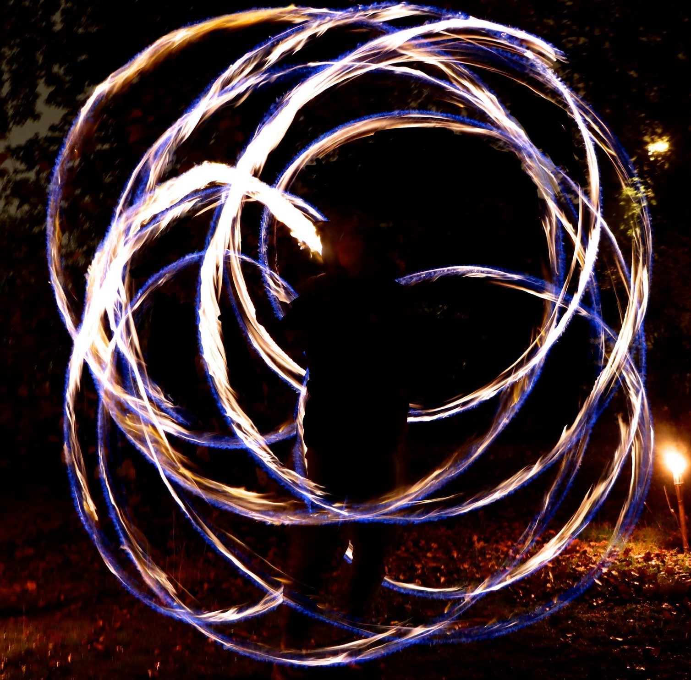

Brennend Heiss
Ich habe vor 4 Jahren angefangen, Feuershows zu machen, und praktiziere seit zehn Jahren
Poi (ich habe damit im Jahr 2014 im Alter von 6 Jahren begonnen).
Meine Feuershows gestalte ich hauptsächlich mit Feuerpoi (zwei brennenden
Bällen an Ketten), aber auch mit einem Feuerstaff (brennender Stab) und Lyco-Fackeln (Fackeln
mit feuerausstoßendem Effekt).
Meine Faszination für Feuershows kommt zu einem großen Teil von meiner Faszination für Feuer. Schon als ich sehr
jung war, war ich sehr fasziniert vom Feuer und wollte immer, wenn wir ein Lagerfeuer gemacht haben,
das Feuer anzünden. Es fasziniert mich, mit dem Feuer zu spielen und das Feuer quasi zu kontrollieren.
Auch jetzt, wo ich schon sehr oft mit Feuer gespielt habe, finde ich es immer noch krass: Die Wärme des
Feuers zu spüren und die Geräusche von Feuer zu hören, das herumgeschwungen wird. Ich mag es auch sehr,
mit dem Feuer zu tanzen. Auch einfach so Poi zu spielen, liebe ich schon sehr lange. Ich habe ja vor 10 Jahren angefangen.

Inzwischen beherrsche ich das Spiel mit Poi und Feuerpoi ziemlich gut,
und es fällt mir sehr natürlich, im Einklang mit der Musik zu tanzen. Dies
liegt daran, dass ich schon seit langer Zeit Poi spiele und es für mich daher sehr
vertraut ist.
Ich habe bereits zahlreiche Feuershows gemacht und sogar einige bezahlte Auftritte gehabt.
Mein Ziel ist es, in Zukunft Feuershows als Nebenjob anzubieten. Aus diesem Grund habe ich
eine Woche lang mit dem professionellen Feuerkünstler
Christian Ziegler verbracht, um von
seinen Erfahrungen zu lernen. In dieser Woche konnte ich viel darüber erfahren, wie man eine
beeindruckende Show gestaltet.
Unter diesem Text ist ein kurzes Video mit einem Ausschnitt meiner Feuershow an der Hochzeit
meiner Cousine.